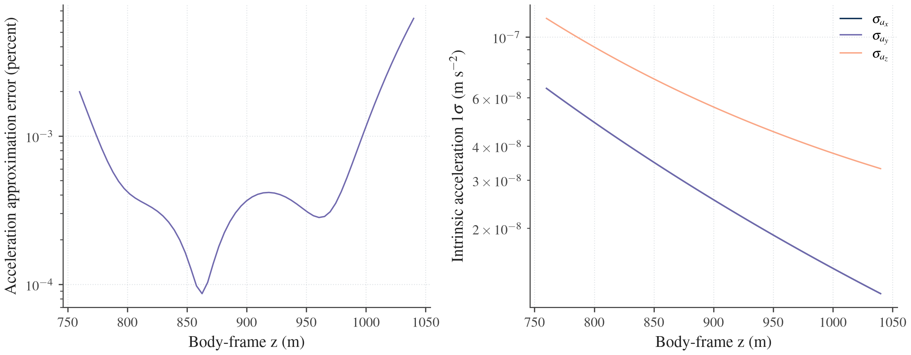
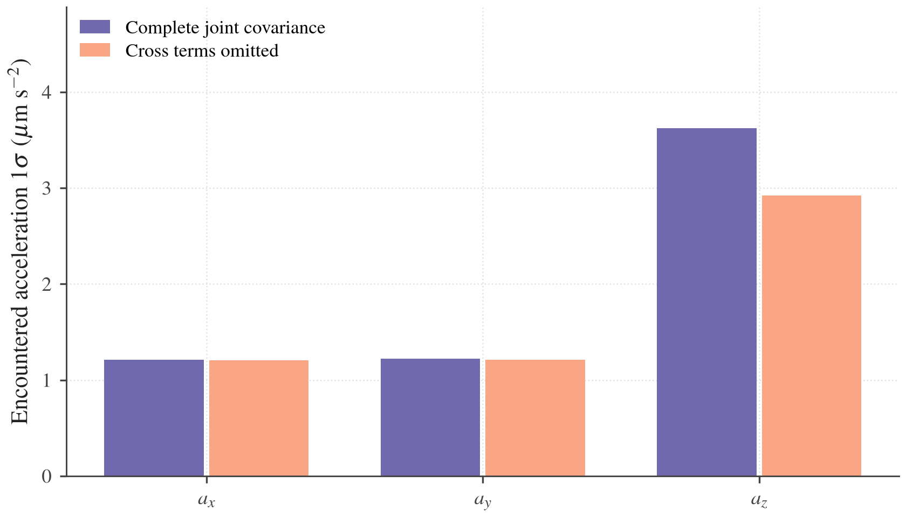

Near-field gravity covariance
BASCO provides a local cylindrical gravity model and transfers uncertainty into its coefficients from an existing Hou model. A second entry point accepts local coefficients and a supplied joint spacecraft, mass and coefficient distribution. Both use the original covariance factors and preserve cross-correlations and unsupported directions. Neither entry point adds measurements or performs a new estimation.
This increment evaluates local fields and their uncertainty. The cylindrical field is not yet connected to RestrictedDynamics. It does not propagate a spacecraft to the surface, detect first contact or produce a landing area. The existing spacecraft covariance continues to use exterior Hou fields.
Choose an input
| Input available | Workflow | Result |
|---|---|---|
| Hou nominal model and an existing covariance/consider result or declared source factor | Map an existing Hou model | Local nominal coefficients, their source Jacobian and a delegate-preserving uncertainty map |
| Local nominal coefficients and a supplied joint distribution | Start with local coefficients | The same coefficient uncertainty interface, without an exterior model, Hera archive or conversion |
The complete near_field_covariance.py runs both workflows with declared demonstration distributions. It uses the synthetic S0 binary for the mapped case. It is not a Hera posterior or a validated landing example.
python3 -B tools/dev.py run examples/near_field_covariance.py
python3 -B tools/dev.py run --native examples/near_field_covariance.py --backend native
The first command selects AD. The second selects the native environment and explicitly requests analytic field derivatives inside the runner. These examples print coefficient/acceleration reports and numerical fit rank; they do not integrate trajectories.
Local field and domain
CylindricalPatch specifies a body-frame cylinder: a base centre, radius, height and optional proper rotation. Its local domain is rho <= radius, 0 <= z <= height. The rotation maps cylinder components into body components. Positions and lengths use metres; compatible Astropy quantities are accepted.
The patch is a declared mass-free region. It does not inspect a shape model or certify that a cylinder clears the asteroid. A physical application must establish that the field domain contains no material, up to an appropriate exterior surface limit. Patch pose is fixed in this increment; patch/shape uncertainty is not included.
from basco.near_field import CylindricalBasis, CylindricalField, CylindricalPatch
patch = CylindricalPatch(origin=[0, 0, 750], radius=100, height=300)
basis = CylindricalBasis(
patch, azimuthal_degree=4, radial_order=5, radial_scale=16,
)
# coefficients must be supplied in basis.layout order, in m²/s².
field = CylindricalField(basis, coefficients) # Lazy AD by default.
evaluation = field.evaluate([0, 0, 850])
This is a composition fragment; the mapped and direct workflows below supply coefficients. backend="native" selects the independent analytic implementation. AD requires the optional JAX dependency and raises an explicit dependency error when unavailable; it never silently substitutes another method.
The explicit degree, radial order and scale above are study choices used by the example. They are not universal defaults or an accuracy guarantee. A small allowed basis can still fit a particular field poorly. Check both values and source sensitivities at independent holdout points when choosing these settings.
The implemented finite family follows the decaying branch of Fereoli and McMahon (2026), Equation 36. In dimensionless patch coordinates (X,Y,Z), with t=X²+Y², its regular Cartesian normalization is
\phi_{mn}=e^{-k_{mn}Z}\,Q_m(X,Y)\,
{}_0F_1\!\left(m+1;-k_{mn}^2t/4\right),\qquad
U=\sum_j b_j\phi_j,\qquad a=-\nabla U.
Q_m is the real or imaginary part of (X+iY)^m. Each coefficient b_j has units m²/s². This is a normalized Fourier–Bessel basis, so raw coefficients from another implementation require conversion. BASCO uses negative gravitational potential and acceleration -grad(U); the cited paper uses the opposite potential sign convention.
The family is harmonic in a vacuum and regular on the cylinder axis. It is one selected axial branch, not the paper's full three-boundary cylinder solution or a unique global asteroid model. Coefficients are free field parameters; no constant-density constraint is introduced.
Modes are ordered by increasing azimuthal degree, radial index, then cosine/sine. The identically zero sine mode at m=0 is excluded. Current numerical limits are azimuthal degree 0–12 and radial order 1–12, with a full-patch Bessel argument bound of 4. Automatic radial_scale satisfies that bound; unsupported explicit choices raise an error. Coefficient scales improve numerical conditioning and are not priors or sigmas. Exact API records the normalization, order, units and numerical envelope.
Map an existing Hou model
HouFieldSource samples one body's own exterior acceleration and its derivatives in the existing named physical parameter coordinates. It retains both masses' columns and all selected degree-2/3/4 directions. Mass changes include the response of fixed nominal degree-5/6 moments. Points are expressed relative to that body's COM in its own body frame and must lie outside its enclosing sphere.
The fragment below assumes matching parameters and a completed covariance/consider result, plus the basis above. last_information_epoch is the actual source information cutoff, not a new observation epoch. The complete runner also demonstrates a newly declared source factor.
import numpy as np
from basco.near_field import HouFieldSource
from basco.spacecraft import SourceUncertainty
source = SourceUncertainty.from_result(
result, reference_epoch_s=0, information_cutoff_s=last_information_epoch,
)
points = np.array([[x, y, z] for x in (-60, -20, 20, 60)
for y in (-50, 0, 50) for z in (780, 840, 920, 1000)])
mapping = HouFieldSource(parameters, "A").map_to(
basis, points,
completion="Conditional continuation of the truncated order-6 Hou field; "
"unmodeled interior structure is not supplied",
)
uncertainty = mapping.bind(source)
field = CylindricalField(basis, mapping.coefficients)
coefficient_report = uncertainty.coefficients_report()
field_report = uncertainty.field_report(field, [[0, 0, 850]])
Use backend="native" on both HouFieldSource and CylindricalField for the analytic route. The same mapping/source/report contracts apply to both methods. Binding matches physical labels and units, including when the mapping coordinates are only a subset of the complete source. Known nominal values and model context are checked before a result is reused.
RepresentationMap.fit is the lower-level deterministic mapper. Given a coefficient-to-sample matrix D, source samples y(q) and their derivative Y_q, it computes local coefficients and a physical transfer T = db/dq using a scaled SVD. Numerical sample scales do not define observation weights. The returned operator can also refit explicitly perturbed source values for validation.
What the completion assumption means
A finite exterior model does not uniquely specify the real field near an irregular surface. completion records the continuation being assumed; it is required. Fitting an order-6 Hou field establishes agreement with that finite model at checked points. It does not restore missing interior information, establish near-surface physical accuracy or remove the exterior expansion's convergence limitation.
Collocation values are repeated evaluations of the same uncertain source, not independent observations. The fit transfers its uncertainty; it does not reduce it. Residuals and holdout errors describe approximation quality and are never converted into coefficient covariance. Duplicating collocation rows supplies no new information.
Preserve source factors and support
For source errors delta q, the local relation is
\delta b=T\,\delta q+L\eta,\qquad
M_b=\left[\operatorname{map\_factor}(T),\ L\right].
L is an optional explicitly independent coefficient-error factor. Original estimation, consider, state and nuisance correlations remain in the source's original latent columns. The map delegates map_factor and derived_stable; it does not reconstruct a factor from rounded covariance. Consider cancellation therefore occurs before the large external factor is applied.
| Direction or diagnostic | Treatment |
|---|---|
| Supported original source combination | Finite covariance from the original factor |
| Original unobservable/numerically unresolved combination | Original unavailable status retained, even if its saved finite factor row happens to vanish |
| Numerically undetermined target combination | Fit rejects by default; an explicitly allowed rank-deficient fit retains unresolved modes |
| Supplied finite singular distribution | Valid declared distribution, including exact zero-variance directions; not automatically an unknown prior |
| Additional genuinely unknown local mode | Declare unresolved_scaled; affected reports remain unavailable rather than receiving zero variance |
| Additional finite independent local errors | Declare additional_factor; this does not erase unresolved fit directions |
| Additional errors correlated with original state/mass/gravity | Supply a complete joint source through the direct interface |
The fit's numerical representation rank is different from the source's data/posterior rank. A deterministic map can change coefficient count and finite covariance rank without changing the original information. Reports record these distinctions and the completion assumption.
Start with local coefficients
CoefficientUncertainty.direct accepts local coefficients and a named original joint source. No exterior coefficient table, archive, previous trajectory or sphere crossing is required. Shared factor columns carry state–mass–coefficient correlations.
This standalone input declares six spacecraft initial errors, one mass and local coefficients. Its nominal field and distribution are demonstration inputs, not an interior reconstruction:
import numpy as np
import basco as bc
from basco.near_field import CoefficientUncertainty, CylindricalBasis, CylindricalPatch
from basco.spacecraft import SourceUncertainty
basis = CylindricalBasis(CylindricalPatch([0, 0, 100], 40, 80), 1, 2)
coefficients = np.zeros(basis.size)
coefficients[0] = -0.02
state_labels = tuple(f"spacecraft.initial.{group}.{axis}"
for group in ("r", "v") for axis in "xyz")
layout = bc.CoordinateLayout(
state_labels + ("mass",) + basis.labels,
("m",) * 3 + ("m / s",) * 3 + ("kg",) + basis.layout.units,
np.r_[[1.] * 3, [0.001] * 3, 2.5e9, np.ones(basis.size)], n_state=6,
)
factor = np.diag(np.r_[[0.2] * 3, [1e-4] * 3, 5e6, [1e-4] * basis.size])
factor[7, 2] = 8e-5 # Coefficient0 shares the spacecraft-z latent error.
factor[6, 2] = 1e6 # Mass shares that error too.
source = SourceUncertainty.from_factor(
layout, factor, source="Declared correlated near-field input",
reference_epoch_s=0, information_cutoff_s=0,
)
uncertainty = CoefficientUncertainty.direct(
basis.layout, coefficients, source,
conventions={"target_basis_identity": basis.identity},
)
The factor contains physical errors in the declared units; do not multiply it by coordinate scales again. Its covariance is factor @ factor.T. from_covariance is also available for a newly supplied PSD matrix. For existing BASCO results, use from_result so their original support policy and consider map survive.
The local coefficients already describe the selected intrinsic field; an additional mass label does not independently add another monopole acceleration. Shared physical roles and compatibility with the retained binary moments must be established when a direct field is connected to binary/spacecraft propagation. This preparation interface does not yet enforce that dynamical compatibility.
Field uncertainty at an uncertain position
field_report evaluates intrinsic field uncertainty at fixed body-frame points. It holds the query position, body attitude and patch pose fixed. Coefficient sigmas depend on the chosen basis; potential and acceleration covariance at matched physical points provide useful representation comparisons.
For an uncertain query position, add its acceleration derivative to the coefficient pathway before squaring. This fragment continues the direct example:
from basco.near_field import CylindricalField
field = CylindricalField(basis, coefficients)
evaluated = field.evaluate([3, 4, 125])
J = np.zeros((3, len(layout.labels)))
J[:, :3] = evaluated.position_jacobian
encountered = uncertainty.joint_report(
("a.x", "a.y", "a.z"), evaluated.acceleration, ("m / s2",) * 3, J,
coefficient_jacobian=evaluated.coefficient_jacobian,
)
Here J contains only the direct query-position pathway; joint_report adds the coefficient pathway once. For a general coupled output with direct source derivative J_q and coefficient derivative H, its original-source derivative is J_q + H T. The source map retains all cross terms. Adding a position-only covariance to a coefficient-only covariance would discard them when the inputs correlate.
Without coefficient_jacobian, joint_report instead concatenates supplied source-only outputs with all coefficients. Use this mode for mass–coefficient or state–coefficient covariance blocks. Explicit independent added coefficient modes contribute only to rows that depend on them; propagation that couples them into spacecraft state must first include them in its full source.
Validation and example figures
The acceptance record distinguishes native/AD checks, opt-in FD, real Hou parameter-map checks and the deterministic demonstration figures. It is the authority for executed commands, tolerances and measured errors. Derivative checks do not establish the accuracy of a physical asteroid field.
The accepted mapped example uses 45 coefficients and 61 independent holdout points along a fixed body-frame line. Maximum relative acceleration error is 0.00621%; maximum active source-sensitivity column error is 0.01735%. These are conditional approximation checks against the finite Hou field at valid exterior points. They do not establish surface accuracy or bound omitted physical heterogeneity. A separate heterogeneous three-point-source fixture checks a mass-free cylinder inside a global enclosing sphere without evaluating an exterior series there.

This comparison diagnoses the selected finite cylindrical approximation against its finite Hou source. It is not an independent validation of the real near-surface field. Source-derived uncertainty, numerical approximation error and unmodeled physical uncertainty are different quantities.

The direct example's complete encountered-acceleration sigmas are (1.209390, 1.220812, 3.620431) µm/s². Omitting the position–gravity cross terms while keeping the marginal covariances gives (1.204340, 1.211905, 2.920845) µm/s². The difference is a property of this declared correlated input, not a general direction or size of covariance error. Shared latent columns preserve the cross terms. Redundant output coordinates can yield singular covariance without adding information; unsupported combinations remain unavailable.
Independent kernel fixtures check Bessel values, exact axis limits, harmonic trace, tilted frames and coefficient/spatial derivatives. Mapping fixtures check scaling/order invariance, no information from repeated samples, direct joint cross terms, rank/null status, original consider cancellation and context mismatches. FD is opt-in and includes reevaluating/refitting the complete physical Hou map, including high-degree mass response. See derivative validation for the general validation interface.
Components and next integration step
| Component | Responsibility |
|---|---|
| CylindricalPatch | Declared geometry, frame, units and domain checks |
| CylindricalBasis | Named normalized modes and linear potential/acceleration/spatial operators |
| CylindricalField | Nominal field with selected AD or native derivatives |
| HouFieldSource | Exterior samples and the existing physical-parameter chain rule |
| RepresentationMap | Deterministic scaled-SVD change of representation and its source Jacobian |
| CoefficientUncertainty | Direct or mapped coefficient uncertainty, full-source factors, support and joint field reports |
Run python3 -B tools/dev.py ad_validate when you want the complete available finite-difference diagnostic collection, including the near-field kernel and physical Hou refits. validate selects the same opt-in collection in the native environment. Ordinary covariance calls do not run these probes.
The next bounded implementation connects a declared local field and full named source to the existing RF3BP variational propagation. It must declare shared mass/moment roles, retain the companion's field and uncertain pose, and check the local domain at every integration stage. Smooth first-contact time/location derivatives and a surface covariance map follow. A model switch, mesh contact and a landing-area study each require their own acceptance; none is supplied by the field mapping alone.
The near-surface implementation plan and joint covariance contract record these boundaries. Return to spacecraft covariance, example scripts or capabilities and limits.